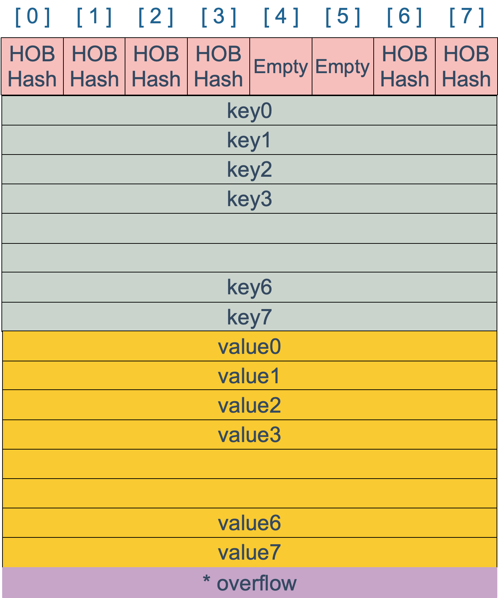
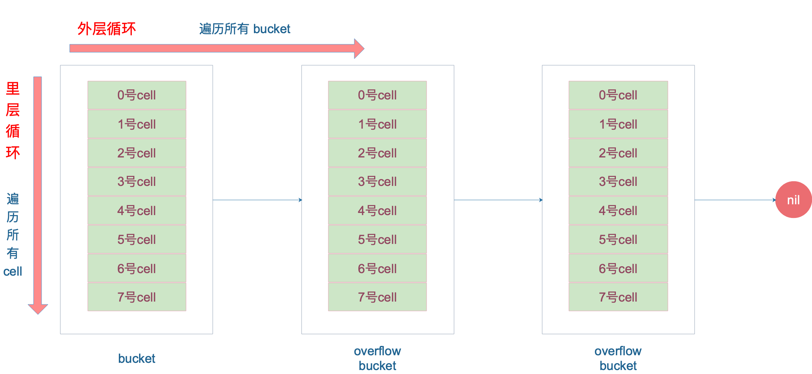

什么是 map #
维基百科里这样定义 map：
In computer science, an associative array, map, symbol table, or dictionary is an abstract data type composed of a collection of (key, value) pairs, such that each possible key appears at most once in the collection.
简单说明一下：在计算机科学里，被称为相关数组、map、符号表或者字典，是由一组 <key, value> 对组成的抽象数据结构，，并且同一个 key 只会出现一次。
有两个关键点：map 是由 key-value 对组成的；key 只会出现一次。
和 map 相关的操作主要是：
- 增加一个 k-v 对 —— Add or insert；
- 删除一个 k-v 对 —— Remove or delete；
- 修改某个 k 对应的 v —— Reassign；
- 查询某个 k 对应的 v —— Lookup；
简单说就是最基本的 增删查改。
map 的设计也被称为 “The dictionary problem”，它的任务是设计一种数据结构用来维护一个集合的数据，并且可以同时对集合进行增删查改的操作。最主要的数据结构有两种：哈希查找表（Hash table）、搜索树（Search tree）。
哈希查找表用一个哈希函数将 key 分配到不同的桶（bucket，也就是数组的不同 index）。这样，开销主要在哈希函数的计算以及数组的常数访问时间。在很多场景下，哈希查找表的性能很高。
哈希查找表一般会存在“碰撞”的问题，就是说不同的 key 被哈希到了同一个 bucket。一般有两种应对方法：链表法和开放地址法。链表法将一个 bucket 实现成一个链表，落在同一个 bucket 中的 key 都会插入这个链表。开放地址法则是碰撞发生后，通过一定的规律，在数组的后面挑选“空位”，用来放置新的 key。
搜索树法一般采用自平衡搜索树，包括：AVL 树，红黑树。面试时经常会被问到，甚至被要求手写红黑树代码，很多时候，面试官自己都写不上来，非常过分。
自平衡搜索树法的最差搜索效率是 O(logN)，而哈希查找表最差是 O(N)。当然，哈希查找表的平均查找效率是 O(1)，如果哈希函数设计的很好，最坏的情况基本不会出现。还有一点，遍历自平衡搜索树，返回的 key 序列，一般会按照从小到大的顺序；而哈希查找表则是乱序的。
map 的底层如何实现 #
首先声明我用的 Go 版本：
|
|
前面说了 map 实现的几种方案，Go 语言采用的是哈希查找表，并且使用链表解决哈希冲突。
接下来我们要探索 map 的核心原理，一窥它的内部结构。
map 内存模型 #
在源码中，表示 map 的结构体是 hmap，它是 hashmap 的“缩写”：
|
|
说明一下，B 是 buckets 数组的长度的对数，也就是说 buckets 数组的长度就是 2^B。bucket 里面存储了 key 和 value，后面会再讲。
buckets 是一个指针，最终它指向的是一个结构体：
|
|
但这只是表面(src/runtime/hashmap.go)的结构，编译期间会给它加料，动态地创建一个新的结构：
|
|
bmap 就是我们常说的“桶”，桶里面会最多装 8 个 key，这些 key 之所以会落入同一个桶，是因为它们经过哈希计算后，哈希结果是“一类”的。在桶内，又会根据 key 计算出来的 hash 值的高 8 位来决定 key 到底落入桶内的哪个位置（一个桶内最多有8个位置）。
来一个整体的图：

当 map 的 key 和 value 都不是指针，并且 size 都小于 128 字节的情况下，会把 bmap 标记为不含指针，这样可以避免 gc 时扫描整个 hmap。但是，我们看 bmap 其实有一个 overflow 的字段，是指针类型的，破坏了 bmap 不含指针的设想，这时会把 overflow 移动到 extra 字段来。
|
|
bmap 是存放 k-v 的地方，我们把视角拉近，仔细看 bmap 的内部组成。

上图就是 bucket 的内存模型，HOB Hash 指的就是 top hash。 注意到 key 和 value 是各自放在一起的，并不是 key/value/key/value/... 这样的形式。源码里说明这样的好处是在某些情况下可以省略掉 padding 字段，节省内存空间。
例如，有这样一个类型的 map：
|
|
如果按照 key/value/key/value/... 这样的模式存储，那在每一个 key/value 对之后都要额外 padding 7 个字节；而将所有的 key，value 分别绑定到一起，这种形式 key/key/.../value/value/...，则只需要在最后添加 padding。
每个 bucket 设计成最多只能放 8 个 key-value 对，如果有第 9 个 key-value 落入当前的 bucket，那就需要再构建一个 bucket ，通过 overflow 指针连接起来。
创建 map #
从语法层面上来说，创建 map 很简单：
|
|
通过汇编语言可以看到，实际上底层调用的是 makemap 函数，主要做的工作就是初始化 hmap 结构体的各种字段，例如计算 B 的大小，设置哈希种子 hash0 等等。
|
|
【引申1】slice 和 map 分别作为函数参数时有什么区别？
注意，这个函数返回的结果：*hmap，它是一个指针，而我们之前讲过的 makeslice 函数返回的是 Slice 结构体：
|
|
回顾一下 slice 的结构体定义：
|
|
结构体内部包含底层的数据指针。
makemap 和 makeslice 的区别，带来一个不同点：当 map 和 slice 作为函数参数时，在函数参数内部对 map 的操作会影响 map 自身；而对 slice 却不会（之前讲 slice 的文章里有讲过）。
主要原因：一个是指针（*hmap），一个是结构体（slice）。Go 语言中的函数传参都是值传递，在函数内部，参数会被 copy 到本地。*hmap指针 copy 完之后，仍然指向同一个 map，因此函数内部对 map 的操作会影响实参。而 slice 被 copy 后，会成为一个新的 slice，对它进行的操作不会影响到实参。
哈希函数 #
map 的一个关键点在于，哈希函数的选择。在程序启动时，会检测 cpu 是否支持 aes，如果支持，则使用 aes hash，否则使用 memhash。这是在函数 alginit() 中完成，位于路径：src/runtime/alg.go 下。
hash 函数，有加密型和非加密型。 加密型的一般用于加密数据、数字摘要等，典型代表就是 md5、sha1、sha256、aes256 这种； 非加密型的一般就是查找。在 map 的应用场景中，用的是查找。 选择 hash 函数主要考察的是两点：性能、碰撞概率。
之前我们讲过，表示类型的结构体：
|
|
其中 alg 字段就和哈希相关，它是指向如下结构体的指针：
|
|
typeAlg 包含两个函数，hash 函数计算类型的哈希值，而 equal 函数则计算两个类型是否“哈希相等”。
对于 string 类型，它的 hash、equal 函数如下：
|
|
根据 key 的类型，_type 结构体的 alg 字段会被设置对应类型的 hash 和 equal 函数。
key 定位过程 #
key 经过哈希计算后得到哈希值，共 64 个 bit 位（64位机，32位机就不讨论了，现在主流都是64位机），计算它到底要落在哪个桶时，只会用到最后 B 个 bit 位。还记得前面提到过的 B 吗？如果 B = 5，那么桶的数量，也就是 buckets 数组的长度是 2^5 = 32。
例如，现在有一个 key 经过哈希函数计算后，得到的哈希结果是：
|
|
用最后的 5 个 bit 位，也就是 01010，值为 10，也就是 10 号桶。这个操作实际上就是取余操作，但是取余开销太大，所以代码实现上用的位操作代替。
再用哈希值的高 8 位，找到此 key 在 bucket 中的位置，这是在寻找已有的 key。最开始桶内还没有 key，新加入的 key 会找到第一个空位，放入。
buckets 编号就是桶编号，当两个不同的 key 落在同一个桶中，也就是发生了哈希冲突。冲突的解决手段是用链表法：在 bucket 中，从前往后找到第一个空位。这样，在查找某个 key 时，先找到对应的桶，再去遍历 bucket 中的 key。
这里参考曹大 github 博客里的一张图，原图是 ascii 图，geek 味十足，可以从参考资料找到曹大的博客，推荐大家去看看。

上图中，假定 B = 5，所以 bucket 总数就是 2^5 = 32。首先计算出待查找 key 的哈希，使用低 5 位 00110，找到对应的 6 号 bucket，使用高 8 位 10010111，对应十进制 151，在 6 号 bucket 中寻找 tophash 值（HOB hash）为 151 的 key，找到了 2 号槽位，这样整个查找过程就结束了。
如果在 bucket 中没找到，并且 overflow 不为空，还要继续去 overflow bucket 中寻找，直到找到或是所有的 key 槽位都找遍了，包括所有的 overflow bucket。
我们来看下源码吧，哈哈！通过汇编语言可以看到，查找某个 key 的底层函数是 mapaccess 系列函数，函数的作用类似，区别在下一节会讲到。这里我们直接看 mapaccess1 函数：
|
|
函数返回 h[key] 的指针，如果 h 中没有此 key，那就会返回一个 key 相应类型的零值，不会返回 nil。
代码整体比较直接，没什么难懂的地方。跟着上面的注释一步步理解就好了。
这里，说一下定位 key 和 value 的方法以及整个循环的写法。
|
|
b 是 bmap 的地址，这里 bmap 还是源码里定义的结构体，只包含一个 tophash 数组，经编译器扩充之后的结构体才包含 key，value，overflow 这些字段。dataOffset 是 key 相对于 bmap 起始地址的偏移：
|
|
因此 bucket 里 key 的起始地址就是 unsafe.Pointer(b)+dataOffset。第 i 个 key 的地址就要在此基础上跨过 i 个 key 的大小；而我们又知道，value 的地址是在所有 key 之后，因此第 i 个 value 的地址还需要加上所有 key 的偏移。理解了这些，上面 key 和 value 的定位公式就很好理解了。
再说整个大循环的写法，最外层是一个无限循环，通过
|
|
遍历所有的 bucket，这相当于是一个 bucket 链表。
当定位到一个具体的 bucket 时，里层循环就是遍历这个 bucket 里所有的 cell，或者说所有的槽位，也就是 bucketCnt=8 个槽位。整个循环过程：

再说一下 minTopHash，当一个 cell 的 tophash 值小于 minTopHash 时，标志这个 cell 的迁移状态。因为这个状态值是放在 tophash 数组里，为了和正常的哈希值区分开，会给 key 计算出来的哈希值一个增量：minTopHash。这样就能区分正常的 top hash 值和表示状态的哈希值。
下面的这几种状态就表征了 bucket 的情况：
|
|
源码里判断这个 bucket 是否已经搬迁完毕，用到的函数：
|
|
只取了 tophash 数组的第一个值，判断它是否在 0-4 之间。对比上面的常量，当 top hash 是 evacuatedEmpty、evacuatedX、evacuatedY 这三个值之一，说明此 bucket 中的 key 全部被搬迁到了新 bucket。